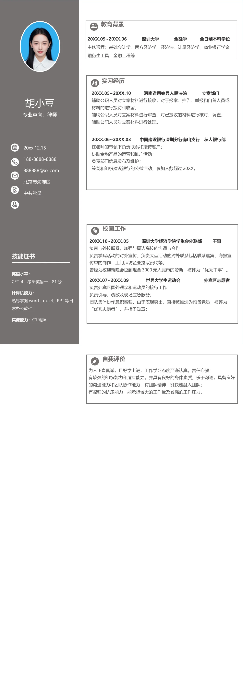

胡小豆
专业意向：律师
20xx.12.15
188-8888-8888
888888@xx.com
北京市海淀区
中共党员
20XX.05~20XX.10 河南省固始县人民法院 立案部门
辅助公职人员对立案材料进行接收，对于报案、控告、举报和自首人员或
材料的进行接待和收留；
辅助公职人员对立案材料进行审查，对已接收的材料进行核对、调查；
辅助公职人员对立案材料进行处理。
20XX.06~20XX.03 中国建设银行深圳分行南山支行 私人银行部
在老师的带领下负责联系和接待客户；
协助金融产品的运营和推广活动；
负责部门信息发布及维护；
策划和组织建设银行的公益活动，参加人数超过20XX。
20XX.10~20XX.05 深圳大学经济学院学生会外联部 干事
负责与外校联系，加强与周边高校的沟通与合作；
负责学院活动的对外宣传，负责大型活动的对外联系包括联系嘉宾、海报宣
传单的制作、上门拜访企业拉取赞助等；
曾经为校迎新晚会拉到现金3000 元人民币的赞助，被评为“优秀干事”。
20XX.07~20XX.09 世界大学生运动会 外宾区志愿者
负责外宾区国外观众和运动员的接待工作；
负责引导、疏散及现场应急服务；
团队集体协作意识增强，由于表现突出，直接被推选为预备党员，被评为
“优秀志愿者”，并授予勋章；
20XX.09~20XX.06 深圳大学 金融学 全日制本科学位
主修课程：基础会计学、西方经济学、经济法、计量经济学、商业银行学金
融衍生工具、金融工程等
英语水平：
CET-4，考研英语一：81 分
计算机能力：
熟练掌握word、excel、PPT 等日
常办公软件
其他能力：
C1 驾照
技能证书
教育背景
实习经历
校园工作
为人正直真诚，且好学上进，工作学习态度严谨认真，责任心强；
有较强的组织能力和适应能力，并具有良好的身体素质，乐于沟通，具备良好
的沟通能力和团队协作能力，有团队精神，能快速融入团队；
有很强的抗压能力，能承担较大的工作量及较强的工作压力。
自我评价